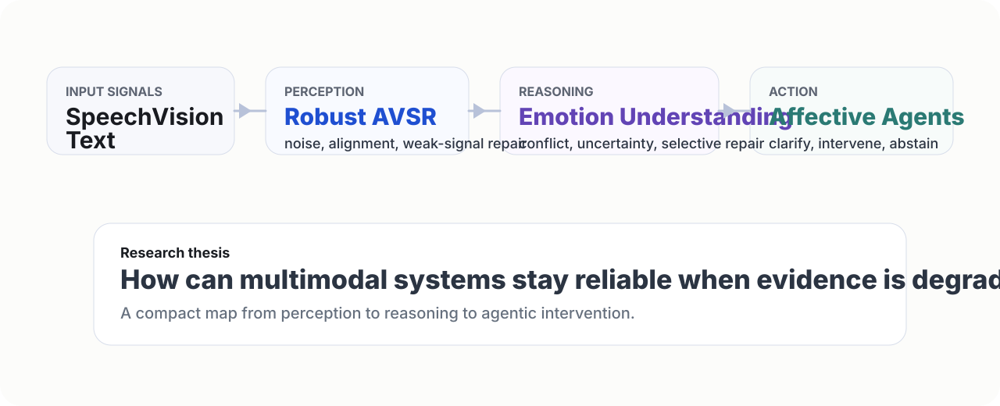

Core Research
Multimodal Emotion Understanding
Modeling emotion from speech, vision, and text with depth-aware representations.
Hi, I'm
Multimodal AI researcher focused on emotion understanding, LLM systems, and practical intelligent products.
I am a Ph.D. candidate at the School of Computer Science, Sichuan University. My research centers on multimodal learning, affective computing, agent systems, large models, and robust speech understanding under real-world conditions. I work on multimodal sentiment analysis, cross-modal contrastive optimization, noise-resilient speech recognition, and emotion-aware agent workflows, with an emphasis on interpretability and generalization.

Core Research
Modeling emotion from speech, vision, and text with depth-aware representations.
Systems
Task-adaptive routing and efficient expert collaboration for better generalization.
Impact
Bridging research and deployment through reliable workflows and automation.
Zhao, Z., Lin, Y., Guo, D., and Fan, J. (2025). AV-RISE: Hierarchical Cross-Modal Denoising for Learning Robust Audio-Visual Speech Representation. Proceedings of the 33rd ACM International Conference on Multimedia, 2054-2063.
Zhao, Z., Guo, D., Ou, W., Liu, H., and Lin, Y. (2025). AMG-AVSR: Adaptive Modality Guidance for Audio-Visual Speech Recognition via Progressive Feature Enhancement. Proceedings of the 16th Asian Conference on Machine Learning, PMLR 260, 952-967.
Ou, W., Zhao, Z., Guo, D., Zhang, Z., and Lin, Y. (2024). WinNet: Make Only One Convolutional Layer Effective for Time Series Forecasting. In Advanced Intelligent Computing Technology and Applications, ICIC 2024, LNCS 14880, 348-359. Springer.
Research
Hierarchical emotion modeling with adaptive multi-level mixture-of-experts.
Platform
End-to-end pipeline for multimodal emotion analysis and conversational AI.
Workflow
Hierarchical cross-modal denoising for robust audio-visual speech representation under noisy real-world conditions.
Tooling
Templates and scripts to accelerate turning academic ideas into usable demos.
Workflow
How I structure literature, experiments, writing, and agent tooling into one continuous loop.
Paper
Why cross-modal denoising became central to how I think about noisy real-world speech representation.
Agent
Not just empathy on the surface, but perception, calibration, clarification, and safe intervention.
Models
Why I think the next step is not simply a bigger model, but better handling of conflict, uncertainty, and repair.